Префектура Окинава · остров Окинава, Мияко, Исигаки, Кумэдзима · еда
Десять мест окинавской собы: от классики до бульона на ракушках и собы с островов
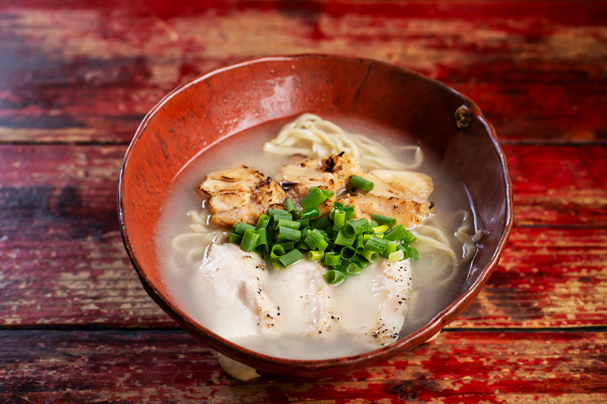
Окинавскую собу делают из лапши, которой нет больше нигде в Японии. Популяризатор окинавской собы выбрал десять мест: старые заведения с проверенным вкусом, новые с неожиданным бульоном и островные, где соба на каждом острове своя.
Классика
«Такаэсу соба»: здесь придумали собу с юси-тофу
В подборке три классических заведения, три с авторским подходом и четыре островных, по которым видно, насколько по-разному едят собу на разных островах. Начнём с классики.
Соба с юси-тофу давно стала обычной строчкой в меню окинавских закусочных, а появилась она в «Такаэсу соба» в городе Урасоэ, по соседству с Нахой. Юси-тофу это тофу на той стадии, когда он ещё не застыл и остаётся мягким и воздушным, как облако. На Окинаве его едят издавна, а здесь догадались положить его в миску с собой.
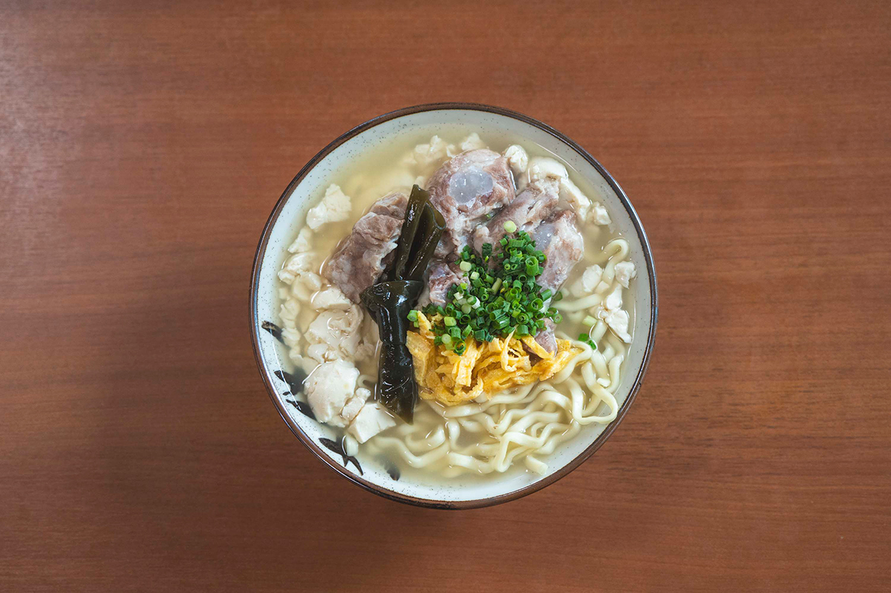
Секрет популярности в равновесии. Юси-тофу, лапша, бульон и начинка дополняют друг друга, и вместе получается вкуснее, чем по отдельности. Наш гид, популяризатор окинавской собы, признаётся, что от сочетания пушистого тофу и окинавской собы оторваться невозможно.
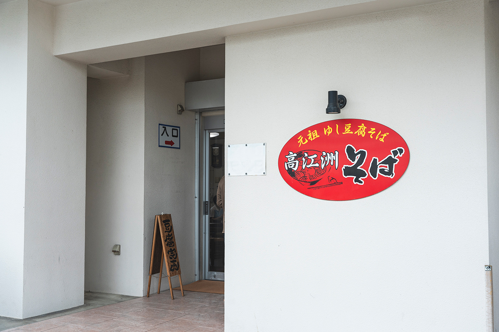
«Такаэсу соба»
- Адрес
- префектура Окинава, Урасоэ, Исо, 3-36-1
- Телефон
- +81 98-878-4201
- Часы работы
- 10:00–15:30 (последний заказ), до окончания порций
- Выходные
- воскресенье
Новый взгляд
«Исигуфу»: соба на курином бульоне
Бульон для окинавской собы обычно варят на свинине и сушёном тунце кацуобуси. «Исигуфу» в Минатогаве, на юге Урасоэ, редкое место, где главную роль играет курица. Здесь берут местную курицу «Ямбару хабу-дори», которую растят на травах в Ямбару, лесистом севере острова Окинава, и курица же лежит в миске сверху.
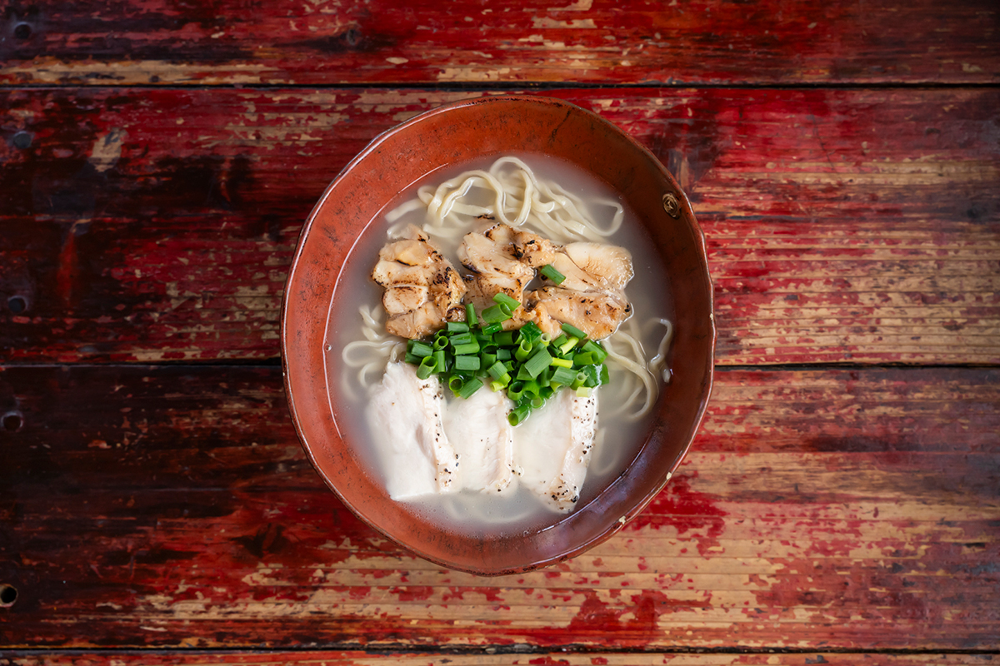
Привыкали к такой собе не сразу, но с годами её приняли, и теперь у заведения много постоянных гостей. Бульон насыщенный и при этом мягкий, а домашняя лапша упругая. По словам гида, куриный бульон такой концентрированный, что его хочется выпить до дна.
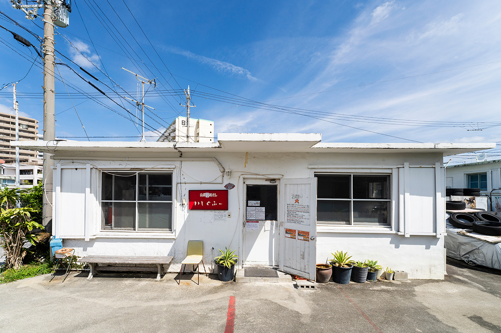
«Исигуфу», заведение в Минатогаве
- Адрес
- префектура Окинава, Урасоэ, Минатогава, 2-13-6, «Кансас-стрит», 40
- Телефон
- +81 98-879-7517
- Часы работы
- 10:00–15:00, в субботу, воскресенье и праздники до 16:00, до окончания порций
- Выходные
- понедельник, вторник
- Сайт
- ishigufu.jp
Классика
«Мэнъя Марусё»: солёная грудинка
«Мэнъя Марусё» открылся в 2017 году, по меркам окинавской собы совсем недавно, но любители собы уже обсуждают его как одно из сильнейших мест. Бульон здесь на основе кацуобуси, солят его просто, и вкус морского отвара чувствуется напрямую. Домашняя лапша упругая, и в меру. Бульон, лапша и начинка одинаково хороши, а главная гордость заведения это санмайнику, свиная грудинка, которую сначала выдерживают в соли.
«Мэнъя Марусё»
- Адрес
- префектура Окинава, Урума, Кацурэн-Хэсикия, 430-2
- Телефон
- +81 98-978-8922
- Часы работы
- 11:00–14:30, до окончания порций
- Выходные
- четверг, пятница
Классика
«Тамая соба»: тонкая лапша
Стоит окинавцам устроить голосование за лучшую собу, «Тамая» в Нандзё, на юге острова, непременно попадает в список. Сюда ходят все: молодые и старые, мужчины и женщины. Отличают заведение тонкая прямая лапша фабрики «Камэхама» и чистый, прозрачный бульон с выразительным вкусом кацуобуси. Он не приедается, и на следующий день хочется прийти снова. Гид называет эту собу образцом жанра.
«Тамая соба», главное заведение
- Адрес
- префектура Окинава, Нандзё, Оодзато, Фурукэн, 913-1
- Телефон
- +81 98-944-6886
- Часы работы
- 10:30–17:00
- Выходные
- без выходных
- Сайт
- tamaya-soba.jp
Новый взгляд
«Кисэки»: ракушки и белый бульон
В Урасоэ есть заведение, у которого очередь не прекращается. Бульон «Кисэки» соединяет отвар из ракушек и белый наваристый бульон на свиных костях. Получается густо и очень насыщенно. К нему заказывают плоскую лапшу, а сверху кладут жареный лопух, красную редьку и фиолетовый лук. Яркая миска и глубокий вкус покорили местных жителей.
«Кисэки»
- Адрес
- префектура Окинава, Урасоэ, Накама, 3-22-5, здание «Тайраэн Тяяма», 102
- Телефон
- +81 98-988-0419
- Часы работы
- 11:00–15:00 и 18:00–20:45 (последний заказ)
- Выходные
- без выходных
Новый взгляд
«Сирано»: соба от французского повара
«Сирано» в городе Окинава открыл повар, который раньше работал во французской кухне. Кроме собы здесь продают хлеб, и в целом заведение мало похоже на привычную закусочную. Гордость кухни это домашняя лапша: в ней чувствуется вкус пшеницы, а сама она мягкая и тянучая. Зал напоминает ресторан, и окинавская соба здесь становится чем-то праздничным.
«Сирано»
- Адрес
- префектура Окинава, город Окинава, Такахара, 1-4-29
- Телефон
- +81 98-989-9919
- Часы работы
- 11:00–20:00, до окончания порций
- Выходные
- среда
Мияко
«Кодзя соба-я»: соба Мияко с 1932 года
На каждом острове окинавская соба своя. На острове Мияко «Кодзя соба-я» готовит здешнюю собу с 1932 года. Фирменное блюдо это соба Мияко с красивым прозрачным бульоном. Он лёгкий, сварен в основном на кацуобуси. Домашняя лапша средней толщины, прямая и гладкая, легко скользит. Начинка как в старину: свинина, рыбный рулет камабоко и зелёный лук. Простая соба с глубоким вкусом, которую местные любят много десятилетий.
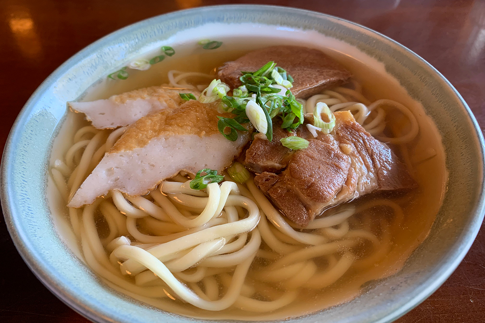
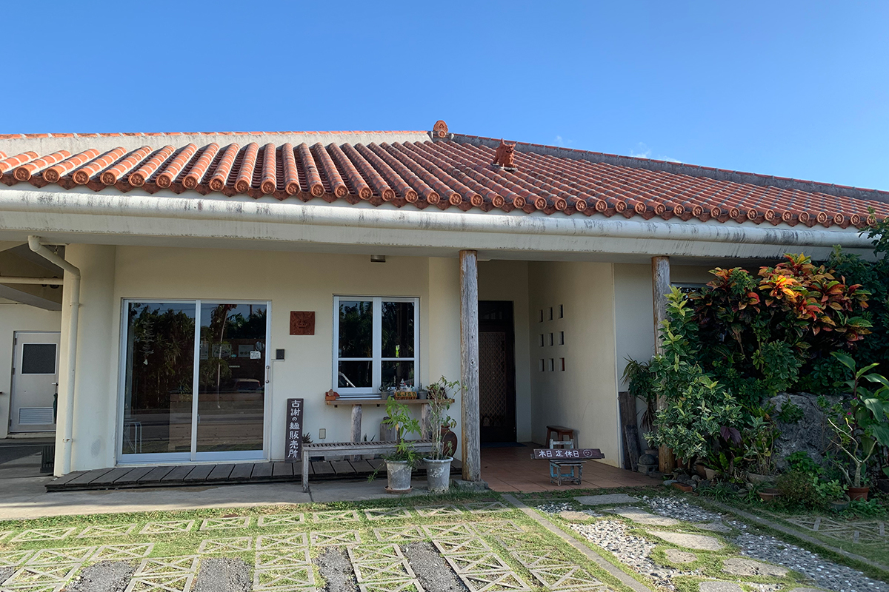
«Кодзя соба-я»
- Адрес
- префектура Окинава, Мияко, Хирара, Симодзато, 1517-1
- Телефон
- +81 980-72-8304
- Часы работы
- 11:00–16:00 (последний заказ), до окончания порций
- Выходные
- среда
- Сайт
- kojasoba.com
Яэяма
«Кунацую»: с пряностью пипаати
На Исигаки, главном острове архипелага Яэяма, «Кунацую» считают одним из лучших мест для собы Яэямы. Бульон на мясной основе приправлен деликатно и оставляет чистое послевкусие. Лапша круглая и прямая, как и положено собе Яэямы, мягкая на зубах. Сверху привычные для этих мест тонкие полоски свинины и камабоко. Состав простой, но бульон и лапша так хороши, что ничего не хочется добавлять, разве что посыпать пипаати, местным длинным перцем.
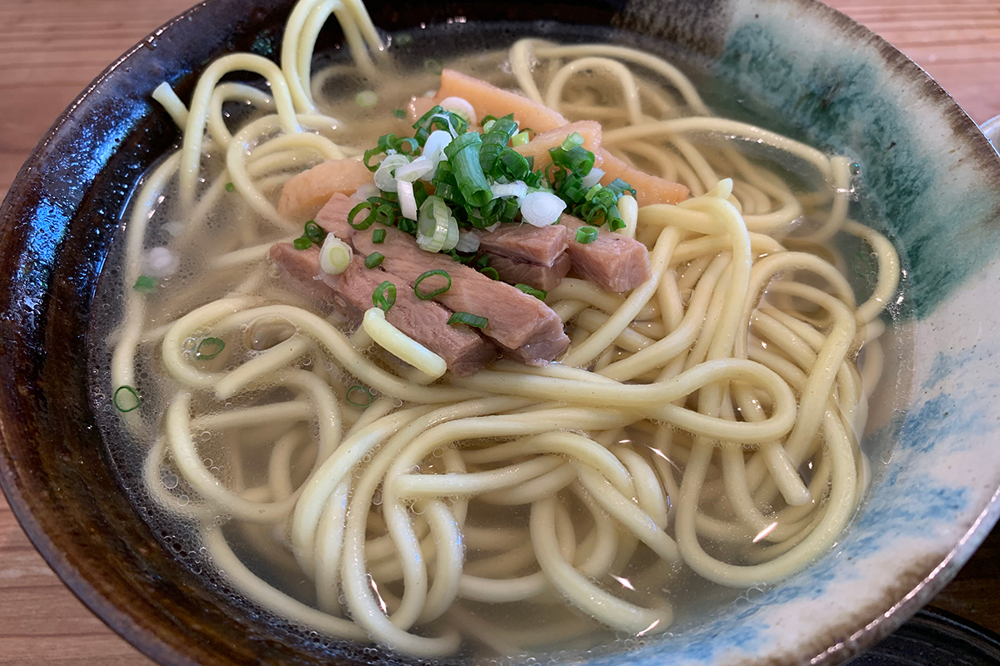
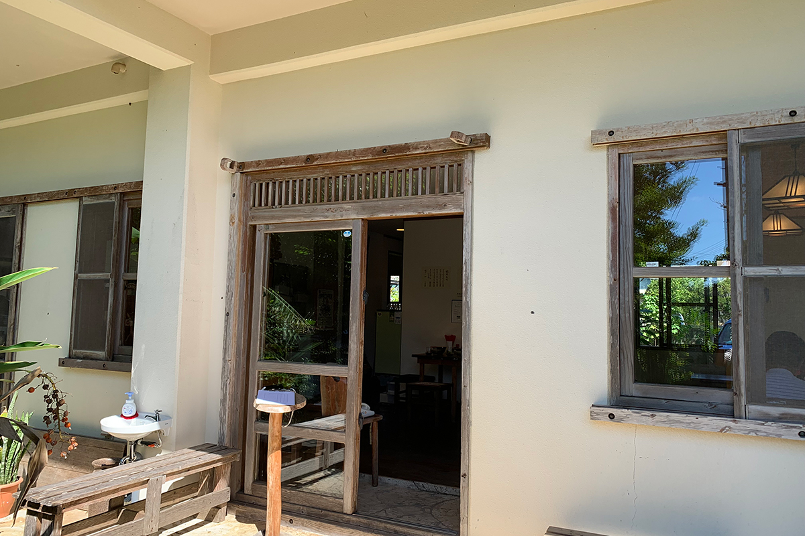
«Кунацую»
- Адрес
- префектура Окинава, Исигаки, Исигаки, 203
- Телефон
- +81 980-82-7646
- Часы работы
- 10:00–14:00, до окончания порций
- Выходные
- среда, четверг, воскресенье
Яэяма
«Аракава сёкудо»: соба с говядиной
На Исигаки становится всё больше заведений с «гю-соба», собой с говядиной: густой говяжий суп соединяют с местной лапшой Яэямы. Гид выделяет «Аракава сёкудо». Крупные куски постной говядины здесь сытные, а круглая лапша Яэямы идеально подходит к насыщенному бульону. По его словам, на Исигаки это блюдо нужно попробовать непременно.
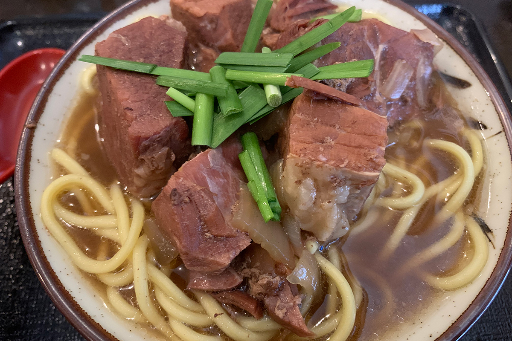
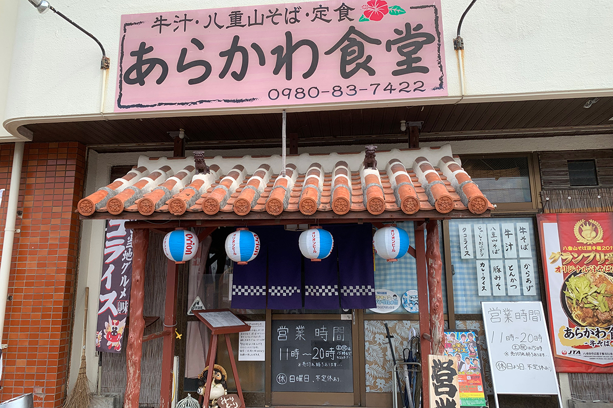
«Аракава сёкудо»
- Адрес
- префектура Окинава, Исигаки, Аракава, 2376-16
- Телефон
- +81 980-83-7422
- Часы работы
- 11:00–16:00 и 17:00–19:30, в субботу 11:00–16:00, до окончания порций
- Выходные
- воскресенье
Кумэдзима
«Янгва»: соба на мисо
Обычно окинавскую собу заправляют солью и соевым соусом, поэтому «соба с островным мисо и ростками» с Кумэдзимы, острова к западу от Окинавы, выделяется сразу. Мисо здесь местное, ростки фасоли тоже, так что вся миска сделана из того, что дал остров. Отвар из курицы, свиных костей, кацуобуси и ламинарии с мисо становится глубже, а чеснок из обжаренных ростков добавляет ещё один слой вкуса.
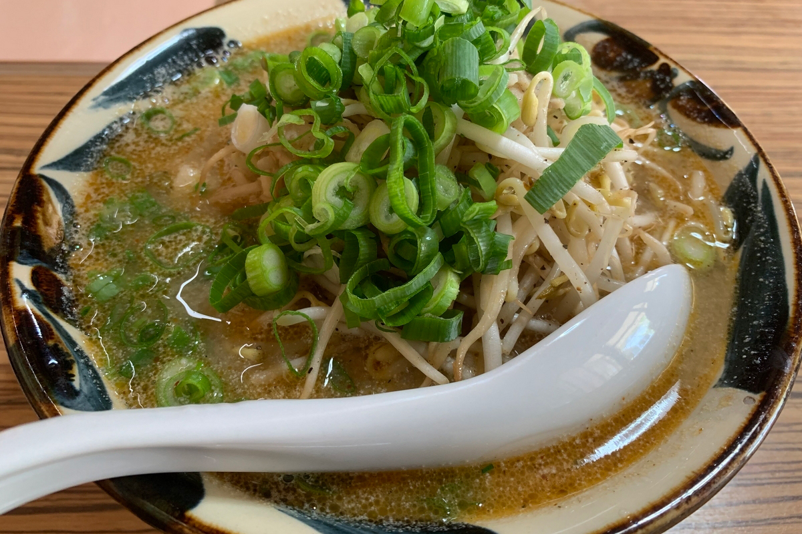
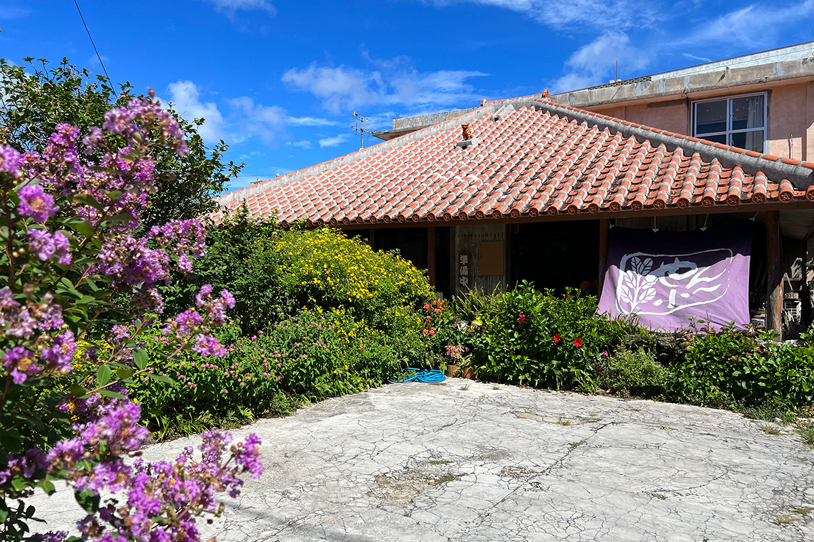
«Янгва»
- Адрес
- префектура Окинава, уезд Симадзири, Кумэдзима, Накадомари, 509
- Телефон
- +81 80-3226-3130
- Часы работы
- 11:30–13:30, до окончания порций
- Выходные
- воскресенье
Фото: Ватару Осиро, Цунэтака Симабукуро.